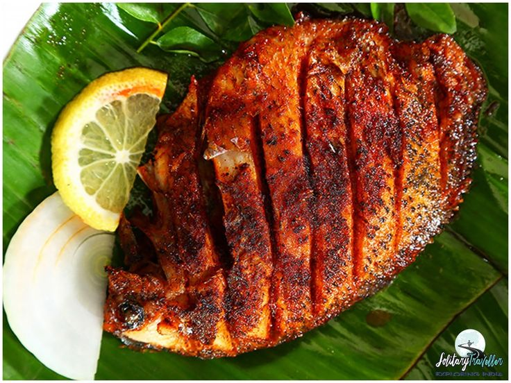

Pesarattu
A crepe-like dish made from green gram (moong dal) and rice batter, typically served with ginger chutney or upma.
Prep Time: 6-8 hours | Cook Time: 15 minutes | Total Time: 8 hours 15 minutes
Serves: 4
Get Recipe
Ingredients:
1 cup whole green gram (moong dal)
1/4 cup rice
2-3 green chilies
1-inch ginger
A handful of fresh coriander leaves
Salt to taste
Instructions:
Wash and soak whole green gram and rice together for 6-8 hours.
Grind the soaked ingredients along with green chilies, ginger, and coriander leaves into a smooth batter. Add salt and mix well.
Heat a non-stick skillet or griddle. Pour a ladleful of batter and spread it in a circular motion to form a thin crepe.
Drizzle some oil around the edges and cook until the pesarattu turns golden brown and crisp.
Serve hot with ginger chutney or upma.
Chettinad Chicken Curry
A spicy and aromatic South Indian chicken curry flavored with traditional Chettinad spices.
Preparation Time: 15 minutes | Cook Time: 40 minutes | Total Time: 55 minutes
Serves: 4
Get Recipe
Ingredients:
500g chicken, cut into pieces
2 onions, finely chopped
3 tomatoes, chopped
2 tablespoons ginger-garlic paste
2 green chilies, slit
1 sprig curry leaves
1 teaspoon mustard seeds
1 teaspoon cumin seeds
1 tablespoon coriander powder
1 tablespoon red chili powder
1/2 teaspoon turmeric powder
1/2 teaspoon garam masala
1/2 cup grated coconut
1/4 cup cashew nuts
2 tablespoons poppy seeds
1 tablespoon fennel seeds
1/4 cup chopped cilantro (coriander leaves) for garnish
Salt to taste
3 tablespoons oil
Instructions:
Grind grated coconut, cashew nuts, poppy seeds, and fennel seeds into a fine paste with some water. Set aside.
Heat oil in a pan. Add mustard seeds and cumin seeds. Let them splutter.
Add chopped onions, green chilies, and curry leaves. Sauté until onions turn golden brown.
Add ginger-garlic paste and sauté until the raw smell disappears.
Add chopped tomatoes and cook until they turn mushy.
Add coriander powder, red chili powder, turmeric powder, and garam masala. Mix well and cook for a couple of minutes.
Add chicken pieces and salt. Cook until the chicken is browned.
Add the ground coconut paste and mix well. Add water if needed to adjust the consistency of the curry.
Cover and cook on low heat for 20-25 minutes or until the chicken is tender and the curry has thickened.
Garnish with chopped cilantro and serve hot with rice or roti.
Aviyal
A traditional South Indian mixed vegetable curry cooked in a coconut and yogurt-based gravy.
Prep Time: 15 minutes | Cook Time: 20 minutes | Total Time: 35 minutes
Serves: 4
Get Recipe
Ingredients:
1 cup mixed vegetables (carrot, beans, potato, drumstick, pumpkin, ash gourd, etc.), chopped
1 cup thick yogurt
1/2 cup grated coconut
2 green chilies
1/2 teaspoon cumin seeds
1/2 teaspoon turmeric powder
A few curry leaves
1 tablespoon coconut oil
1/2 teaspoon mustard seeds
2-3 dried red chilies
Salt to taste
Instructions:
Grind grated coconut, green chilies, and cumin seeds into a fine paste. Set aside.
Cook the mixed vegetables with turmeric powder and salt until they are tender but still retain their shape. Drain excess water and set aside.
In a pan, heat coconut oil. Add mustard seeds and let them splutter. Add dried red chilies and curry leaves.
Add the cooked vegetables to the pan and mix well.
Add the coconut paste to the vegetables and mix until well combined.
Turn off the heat and gradually add thick yogurt while stirring continuously to prevent curdling.
Adjust salt if needed and serve hot with rice.
Kori Gassi (Mangalorean Chicken Curry)
A rich and spicy chicken curry from the Mangalorean cuisine, known for its vibrant flavors and coconut-based gravy.
Preparation Time: 15 minutes | Cook Time: 40 minutes | Total Time: 55 minutes
Serves: 4
Get Recipe
Ingredients:
500g chicken, cut into pieces
2 onions, finely chopped
3 tomatoes, chopped
2 tablespoons ginger-garlic paste
2 green chilies, slit
1 sprig curry leaves
1 teaspoon mustard seeds
1 teaspoon cumin seeds
1 tablespoon coriander powder
1 tablespoon red chili powder
1/2 teaspoon turmeric powder
1/2 teaspoon garam masala
1 cup grated coconut
1 tablespoon tamarind pulp
1/4 cup cashew nuts
2 tablespoons poppy seeds
1 tablespoon fennel seeds
1/4 cup chopped cilantro (coriander leaves) for garnish
Salt to taste
3 tablespoons oil
Instructions:
Grind grated coconut, cashew nuts, poppy seeds, and fennel seeds into a fine paste along with tamarind pulp and some water. Set aside.
Heat oil in a pan. Add mustard seeds and cumin seeds. Let them splutter.
Add chopped onions, green chilies, and curry leaves. Sauté until onions turn golden brown.
Add ginger-garlic paste and sauté until the raw smell disappears.
Add chopped tomatoes and cook until they turn mushy.
Add coriander powder, red chili powder, turmeric powder, and garam masala. Mix well and cook for a couple of minutes.
Add chicken pieces and salt. Cook until the chicken is browned.
Add the ground coconut paste and mix well. Add water if needed to adjust the consistency of the curry.
Cover and cook on low heat for 20-25 minutes or until the chicken is tender and the curry has thickened.
Garnish with chopped cilantro and serve hot with rice or roti.

Karimeen Pollichathu
A traditional Kerala delicacy made with pearl spot fish marinated in a blend of spices, wrapped in banana leaves, and cooked to perfection.
Preparation Time: 20 minutes | Cook Time: 30 minutes | Total Time: 50 minutes
Serves: 4
Get Recipe
Ingredients:
4 pearl spot fish (karimeen), cleaned and descaled
2 tablespoons red chili powder
1 tablespoon turmeric powder
1 tablespoon ginger-garlic paste
2 tablespoons lemon juice
Salt to taste
4 tablespoons coconut oil
2 onions, thinly sliced
2 tomatoes, thinly sliced
4 green chilies, slit
1 sprig curry leaves
4 banana leaves, cut into squares (for wrapping)
String or toothpicks (for securing banana leaves)
Instructions:
Make deep gashes on both sides of the fish using a sharp knife.
In a bowl, mix red chili powder, turmeric powder, ginger-garlic paste, lemon juice, and salt to form a smooth paste.
Apply the prepared marinade generously over the fish, making sure to coat it well inside the gashes. Marinate for at least 30 minutes.
Heat coconut oil in a pan over medium heat. Add sliced onions, tomatoes, green chilies, and curry leaves. Sauté until the onions turn translucent.
Place each fish on a square of banana leaf. Top each fish with a portion of the sautéed onion-tomato mixture.
Wrap the banana leaves securely around each fish, folding and securing them with string or toothpicks.
Heat a flat griddle or tawa. Place the wrapped fish parcels on the griddle and cook on low heat for about 10-15 minutes on each side or until the fish is cooked through and the banana leaves char slightly.
Once cooked, carefully unwrap the banana leaves and serve hot with steamed rice or appam.
Mysore Pak
A famous South Indian sweet made with gram flour, ghee, and sugar, known for its rich texture and melt-in-your-mouth goodness.
Preparation Time: 10 minutes | Cook Time: 30 minutes | Total Time: 40 minutes
Serves: 8
Get Recipe
Ingredients:
1 cup gram flour (besan)
1 cup ghee
1 cup sugar
1/4 cup water
1/4 teaspoon cardamom powder
A pinch of edible camphor (optional)
Instructions:
Grease a tray or plate with ghee and set aside.
Heat ghee in a heavy-bottomed pan over low heat.
Add gram flour (besan) to the pan and roast it on low heat until it turns aromatic and slightly changes color. Stir continuously to avoid burning.
In another pan, combine sugar and water. Cook over medium heat until the sugar dissolves completely and forms a thick syrup. To test the syrup consistency, take a drop between your thumb and index finger. It should form a soft ball when pressed.
Slowly add the sugar syrup to the roasted gram flour mixture, stirring continuously to avoid lumps.
Continue cooking the mixture on low heat, stirring constantly, until it thickens and starts leaving the sides of the pan. It will become frothy and start bubbling up.
Add cardamom powder and edible camphor (if using) and mix well.
Transfer the mixture to the greased tray or plate and spread it evenly using a spatula.
Allow it to cool for a few minutes, then cut it into square or diamond-shaped pieces using a knife.
Once completely cooled, remove the pieces from the tray and store them in an airtight container.
Mysore Pak is ready to be served and enjoyed as a delightful sweet treat!
Mangalorean Fish Curry
A tangy and spicy curry from the coastal region of Mangalore, made with fresh fish, coconut milk, and aromatic spices.
Preparation Time: 15 minutes | Cook Time: 25 minutes | Total Time: 40 minutes
Serves: 4
Get Recipe
Ingredients:
500g fish (preferably kingfish or pomfret), cut into pieces
1 onion, finely chopped
2 tomatoes, chopped
1 tablespoon ginger-garlic paste
2 green chilies, slit
1 sprig curry leaves
1 teaspoon mustard seeds
1/2 teaspoon fenugreek seeds
1/2 teaspoon turmeric powder
1 tablespoon red chili powder
1 tablespoon coriander powder
1 cup thick coconut milk
2 tablespoons coconut oil
Salt to taste
Instructions:
Heat coconut oil in a pan. Add mustard seeds and fenugreek seeds. Let them splutter.
Add chopped onions, green chilies, and curry leaves. Sauté until onions turn golden brown.
Add ginger-garlic paste and sauté until the raw smell disappears.
Add chopped tomatoes and cook until they turn mushy.
Add turmeric powder, red chili powder, and coriander powder. Mix well.
Add fish pieces and salt. Cook for 2-3 minutes.
Pour thick coconut milk and simmer for 10-15 minutes or until the fish is cooked through and the curry thickens.
Adjust the seasoning and consistency according to your preference.
Once done, garnish with curry leaves and serve hot with steamed rice or appam.
Coorg Pandi Curry
A traditional pork curry from the Coorg region of Karnataka, known for its rich and spicy flavors.
Preparation Time: 20 minutes | Cook Time: 1 hour | Total Time: 1 hour 20 minutes
Serves: 4
Get Recipe
Bisi Bele Bath
A flavorful one-pot meal from Karnataka, made with rice, lentils, mixed vegetables, and aromatic spices.
Preparation Time: 20 minutes | Cook Time: 40 minutes | Total Time: 1 hour
Serves: 4
Get Recipe
Ingredients:
1 cup rice
1/2 cup toor dal (pigeon peas)
2 tablespoons bisi bele bath powder
1 onion, chopped
1 tomato, chopped
1 cup mixed vegetables (carrots, beans, peas)
2 tablespoons tamarind extract
1 teaspoon mustard seeds
1 teaspoon cumin seeds
1/4 teaspoon asafoetida (hing)
2 tablespoons ghee
Salt to taste
Coriander leaves for garnish
Instructions:
Pressure cook rice and toor dal with enough water until soft.
In a large pan, heat ghee and add mustard seeds. Once they splutter, add cumin seeds and asafoetida.
Add chopped onions and sauté until translucent.
Add chopped tomatoes and cook until they turn soft.
Add mixed vegetables, bisi bele bath powder, tamarind extract, and salt. Mix well.
Add cooked rice and dal mixture to the pan. Mix everything together gently.
Simmer for 10-15 minutes until the flavors meld together and the mixture thickens slightly.
Garnish with coriander leaves and serve hot with a dollop of ghee on top.
Ingredients:
500g pork, preferably with fat, cut into bite-sized pieces
2 onions, finely chopped
2 tomatoes, chopped
1 tablespoon ginger-garlic paste
2-3 green chilies, slit
1 sprig curry leaves
1 teaspoon mustard seeds
1 teaspoon cumin seeds
1/2 teaspoon turmeric powder
2 tablespoons coriander powder
1 tablespoon red chili powder
1 tablespoon vinegar
Salt to taste
2 tablespoons oil
Instructions:
Heat oil in a pan. Add mustard seeds and cumin seeds. Let them splutter.
Add chopped onions, green chilies, and curry leaves. Sauté until onions turn golden brown.
Add ginger-garlic paste and sauté until the raw smell disappears.
Add chopped tomatoes and cook until they turn mushy.
Add turmeric powder, coriander powder, red chili powder, vinegar, and salt. Mix well.
Add pork pieces and coat them well with the masala.
Cover and cook on low heat for about 45-50 minutes or until the pork is tender and cooked through.
Adjust the seasoning according to your taste preferences.
Once done, garnish with fresh coriander leaves and serve hot with steamed rice or akki roti.